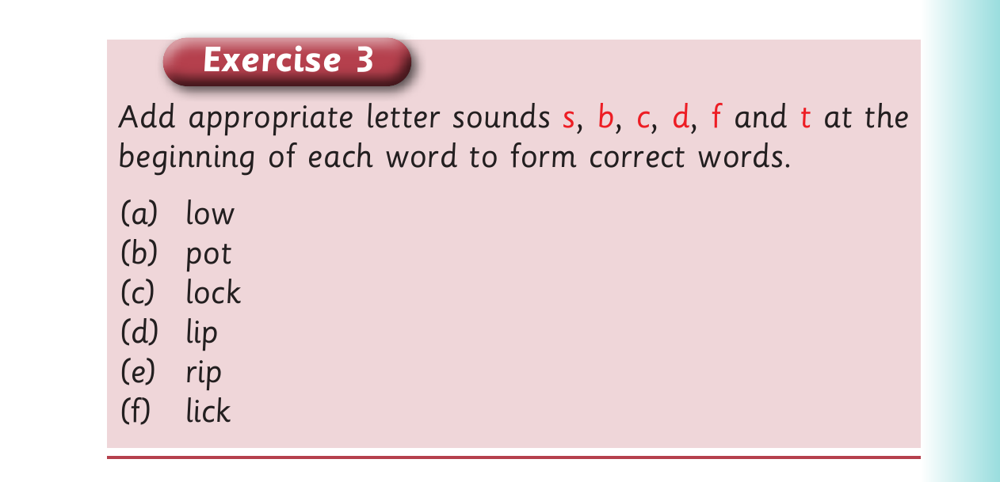

Adding beginning sounds - Exercise 3
Example: top- s top
3. Pronounce the words you have formed in (2). 4. Read the following sentences aloud: (a) Don’t rip the map before you finish the trip. (b) The old people told us stories. (c) At the party, he wore a hat. (d) They were near the top and had to stop. (e) The air at the top felt fair.

Exercise 3 Add appropriate letter sounds s , b , c , d , f and t at the beginning of each word to form correct words. (a) low (b) pot (c) lock (d) lip (e) rip (f) lick